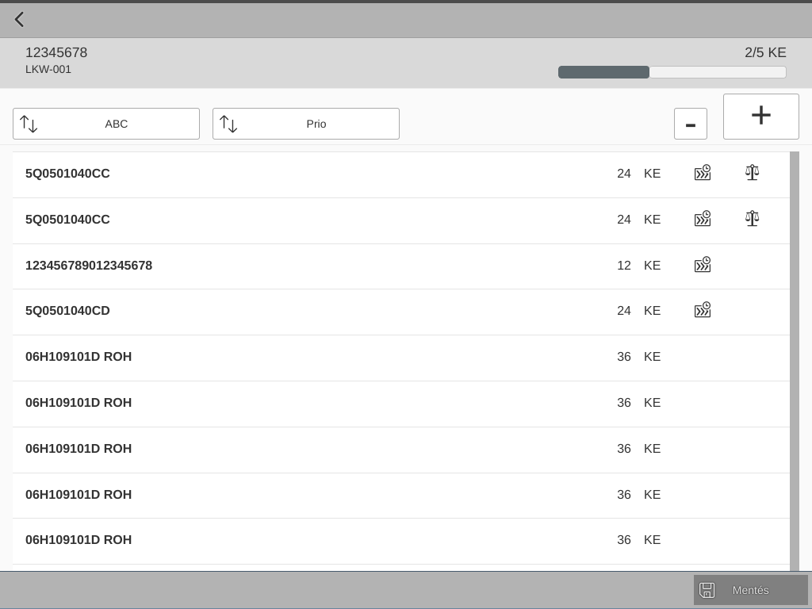

Mikor válasszunk Fiorit ABAP helyett?
Posted on 2023-05-15 in Fiori
Table of Contents
The article was originally published on Onespire.hu
1. Bevezető
Sok ügyfél kerül döntési helyzetbe: ABAP riport készüljön vagy Fiori megoldás? A Fiori drágább. Több funkcionalitás és több csilli-villi elkészítéséhez több fejlesztői ráfordításra van szükség. Emiatt nem érdemes mindig Fiorit választani, csak azért mert ez az épp felkapott irányvonal. De számos olyan helyzet akad, amikor megéri a többletráfordítást valamit Fiori segítségével megvalósítani. Ebben a cikkben ilyen eseteket gyűjtöttem össze.
2. Felhasználási esetek
2.1. Elérés mobilon
Sok IT szervezet biztosítja már a vállalati folyamatok elérését telefonon.
Képzeljük el, hogy mi vagyunk a felelősek a beszerzési megrendelések (PO-k) elfogadásáért egy költséghelyen. Ha el kéne fogadni egy PO-t, akkor az jó eséllyel egy workitem formájában érne el minke a SAP Business Workplacen (SBWP) keresztül.
Tegyük fel, hogy otthon vagyunk egy fárasztó nap után, de valakinek, valamiért épp azonnal szükséges egy jóváhagyás. (Mindez csak a képzelet szüleménye, a valóságban ilyesmi elképzelhetetlen.)
Tehát, lemegyünk a kocsiban felejtett laptopért. Megkeressük a töltőt, bedugjuk a konnektorba és bekapcsoljuk. És várunk. Várunk arra, hogy elinduljon. Várunk arra, hogy befejezze a Windows Updatet. Várunk arra, hogy létrejöjjön a VPN kapcsolat, miután mindenféle kétfaktoros autentikáción túlestünk. Majd elindítjuk a SAPGUI-t (vagy megvárjuk, hogy elinduljon az Outlook és onnan keressük ki a linket, ami az SBWP-t indítja). Bejelentkezünk. Elindítjuk a tranzakciót, megkeressük a workitemet és esetleg még más tranzakciókban is keresgélünk, hogy leellenőrizzük, minden rendben van-e. Végül jóváhagyjuk a megrendelést.
És akkor lépjünk be egy másik világba, ahol már van Fiori. Elővesszük a telefonunkat, ami mindig nálunk van. Kinyitjuk a vállalati böngészőt, amely szükség szerint a háttérben felépíti a VPN kapcsolatot, majd bejelentkezünk a Fiori Launchpadra. A My Inbox csempe egyből előttünk van, a legújabb workitemmel és minden releváns információvala döntéshozatalhoz. Végül jóváhagyjuk a megrendelést.
Melyik a kellemesebb a fentiek közül?
Persze, a második szcenárió nem fog magától kulcsrakészen érkezni hozzánk a SAP-tól. Az IT infrastruktúra mellett biztosítani kell, hogy a workflow támogassa a My Inbox-ot, hogy megjelenjenek a döntéshez szükséges releváns információk és a döntés végre is hajtódjon. De ezt a fejlesztést csak egyszer kell megcsinálni és minden vezető hálás egy ilyen kényelmes megoldásért.
2.2. Folyamat a középpontban
Mindannyian dolgoztunk már úgy tranzakciókkal, hogy a bennük rejlő funkcionalitásnak csak egy része volt releváns, viszont ez a sokoldalúság sokkal bonyolultabbá tette a munkavégzést.
Sokszor egyszerűbb programozási szempontból csoportosítani tevékenységeket, amelyek szerteágazó beállítási lehetőségekkel rendelkeznek. Ezek természetesen mind más-más mezőkön alapulnak, de így végső soron mind jelen vannak. És ha mindez nem lenne elég, a legkülönbözőbb füleken hol megjelenve, hol eltűnve. Ne bújkálj MIGO, mindenki tudja, hogy rólad van szó.
Ám ha a fejlesztési szempontok helyett a végfelhasználó kerül az első helyre és a folyamat, akkor ez a felesleges komplexitás elkerülhető. Márpedig ha kevesebb a komplexitás, akkor a jobb áttekinthetőség kevesebb a hibalehetőséget hoz és így gyorsabb munkavégzést és nagyobb hatékonyságot tesz lehetővé.
Ha sok felhasználó napi munkavégzését tudjuk így egyszerűsíteni, akkor a hatékonyságnövelés könnyen lefordítható anyagi előnyre.
2.3. Az idő pénz
Ez a szempont kéz a kézben jár a mobil eléréssel, de több annál.
Mi van akkor, ha egy szolgáltatónak fizetnünk kell, amíg a kamionja nálunk várakozik lerakodásra a raktárban? Ez egy azonnal érezhető anyagi teher, ami rávilágít arra, hogy a lerakodási folyamatnak bolondbizotsnak és a lehető leggyorsabbnak kell lennie.
Ha mindez papír alapon történik, akkor kétszer kell mindent rögzíteni. Egyszer a helyszínen, amikor a lerakodás történik, majd bepötyögni mindent még egyszer a rendszerbe az irodában. Ez hibalehetőségeket rejt magában és felesleges dupla munka.
Ha viszont van kéznél egy telefon vagy tablet, hogy megtámogassa ezt a folyamatot, akkor ott a helyszínen lehetne rögzíteni az eseményeket valós időben. A tételeket sorba lehetne rendezni fontosság alapján. Részleteket lehetne leellenőrizni ott helyben. Az elemeket ledolgozása a listában folyamatosan visszatükröződne. Le lehetne olvasni vonalkodót. Lehetne keresni a tételek között. És nem kellene mindent kétszer rögzíteni.
Ez ismét egy olyan eset, ahol a Fiori fejlesztés költségeit bőven ellensúlyozzák az elért -materializálható- előnyök.
Egy vezető autógyártó vállalat ezt az utat választotta és egy személyre szabott, egyedi megoldást használnak a hét minden napján éjjel-nappal:

2.4. Ha nincs SAPGUI
Nincs minden ügyfélnél SAPGUI, vagy legalábbis a leányvállalatokra ez már nem feltétlenül igaz. Mégis, előfordul, hogy szükségük van SAP elérésre és nem csak riporting céllal.
A Fiori itt is segíthet.
Hogy? A tervezéstől a megvalósításig mindenhol. Az ilyen leányvállalatok nem ismerik a SAP terminológiát, nincs tapasztalatuk a SAPGUI-val, de mégis szükséges, hogy megismerjék, milyen megoldás fogja kielégíteni az igényüket. Ezt nagyon könnyű megvalósítani Fiori képernyőtervekkel. Ezt úgy kell elképzelni, mint egy Burda Magazinból összeollózott word fájlt, amelyet az ügyfél változáskövetéssel véleményezhet. A dokumentum tartalmazza a képernyőfelépítést, beleértve valamennyi mezőt, jelölve azok forrását, továbbá minden funkcionalitást, amely a végfelhasználó számára majd rendelkezésre áll.
A végfelhasználónak, aki a dokumentumot véleményezi, nem kell ismernie a SAP-ot vagy a Fiori-t. Pont ez a lényeg, mert ha a felhasználói felület nem magától értetődő, akkor rossz. A megoldásnak intuitívnak kell lennie és a Fiori SAPUI5 legókockáival ez tökéletesen megvalósítható.
Az egyeztetéseket követően előáll a végleges képernyőterv, megfogalmazva az ügyfél számára azt, hogy mit fog kapni, a fejlesztő számára pedig azt, hogy mit kell elkészítenie. Mivel ez a felfedezés fázis, amely az igény megfogalmazására szolgál, könnyen elválasztható a megvalósítástól, így ez anyagilag is enged egy megbontást, illetve szükség szerint elválhat egymástól a felmérést végző és a kivitelező.
A nincs SAPGUI kitétel esetén a Fiori előnye magától értetődő. Nem kell teríteni, patchelni és managelni a SAPGUI-t, mert csak egy böngészőre van szükség.
Egy élelmiszeripari ügyfelünk ilyen utat járt be és a következő lett az eredmény:
2.5. Amikor a Fiori fejlesztése egyszerűbb, mint egy ALV-é
Van olyan eset, amikor a hihetetlen megtörténik - a Fioris megoldás olcsóbb, mint egy ABAP riport fejlesztése.
Ez akkor fordul elő, ha a RESTful ABAP Programming Model-t használjuk (RAP). Ez a technológia a Fiorit részesíti előnyben és gyorsabb Fiori elérést tesz lehetővé, mint ABAP-ot. Mivel rengeteg üzleti információ kerül az alkalmazás alsó rétegeibe beépítésre az újrafelhasználhatóság miatt, így annak az újraimplementációja ALV-n egy Fiori Elements alkalmazással szemben nagyobb ráfordítással jár.
2.6. Alkalmazkodás a többi alkalmazáshoz
Ha egy üzleti egység már Fiori alkalmazásokat használ, akkor számukra egy nem-Fiori megoldás visszalépés. Visszalépés funkcionalitásban, koherenciában és mindent egybevéve felhasználói elégedettség tekintetében.
2.7. Amikor egy funkcionalitás nem elérhető SAPGUI-ban, de Fiorival megvalósítható
Ha valaki még sosem nézte meg mit lehet megvalósítani SAP Fioriban, akkor mindenképp érdemes ezt pótolni. Olyan lehetőségeket fedezhetünk így fel, amelyekről sosem gondoltuk volna, hogy lehetséges és hasznos lenne.
Egy ügyfelünk úgy döntött, hogy a gyártásban kulcsfontosságú SAP rendszerét Fiori segítségével monitorozza 24/7-ben, történjen ez egy TV kivetítőjén, vagy az ügyeletes zsebében lévő telefonon:
A következő forrásokra érdemes szánni egy pár órát:
Csak úgy ízelítőnek:
- Térképek?
- 3D-s objektumok megtekintése?
- Olyan diagramok, amelyeket csak Dashboardokon láttunk?
- Több diagram egy oldalon?
- Táblázatos ÉS diagramos adatmegjelenítés egyszerre?
- Varázslóval végigvezetett folyamatok?
- Hálózat diagramok?
- Főkönyvi számlák T megjelenítéssel?
A SAPUI5 eszközkészlet mindenben támogat.
2.8. Nem-SAP integráció
A Fiori mögött lévő SAPUI5 eszközkészlet nem csak SAP rendszerekhez használható. Ha a rendelkezésre álló adatforrás OData kompatibilis, akkor máris lehet rá Fiori frontendet ültetni. Vagy menjünk még tovább: nem SAP ügyfél és nincsen hozzáférése a SAPUI5 eszközkészlethez. Ekkor is használhatja ennek az ingyenes, openUI5 változatát, ingyen (a Fiori Elements kivételével).
Így tehát nem-SAP backendre és készíthető Fiori alkalmazás. És mint ilyen, integrálható a rendszerkörnyezetbe, a többi Fiori alkalmazás mellé. ÚGy vélem ez tényleg egy olyan lehetőség, amely rávilágít arra, hogy Fiorival mennyi minden elérhető.
3. Checklist a döntéshez
- Szükséges telefonos/tabletes elérést?
- Fel tudja gyorsítani a Fiori a végfelhasználók munkavégzését?
- Fel tudja gyorsítani a Fiori az üzleti folyamatot?
- Nem elérhető a SAPGUI?
- A RAP jó választás az üzleti problémára?
- A végfelhasználók már egyébként is Fiorit használnak?
- Valamilyen különleges UI funkcionalitásra van szükség?
- Más, third-party, de OData képes rendszert kell integrálni?
Ha a válasz igen, akkor a Fiori logikus választás.